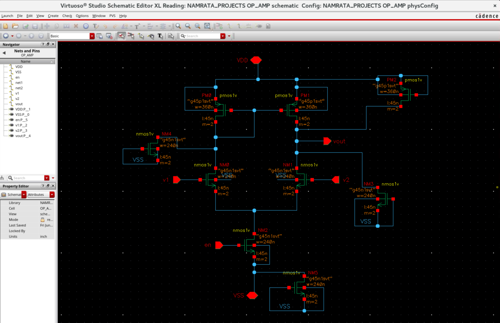
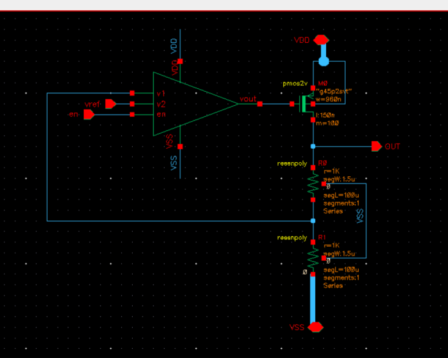
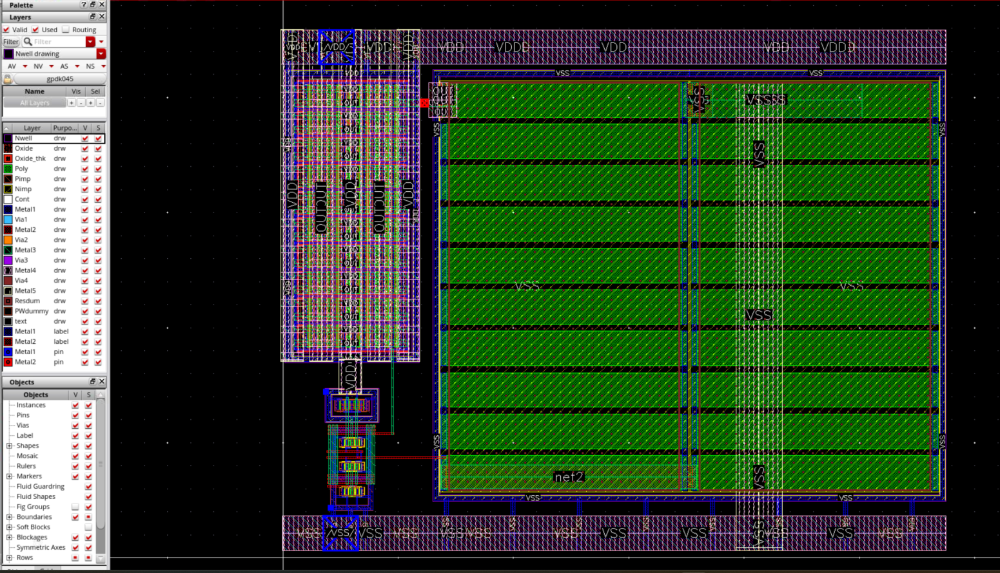
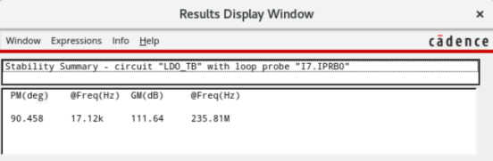
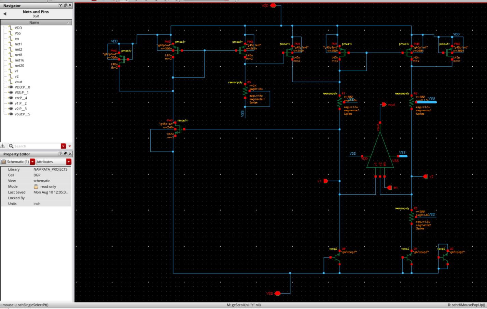
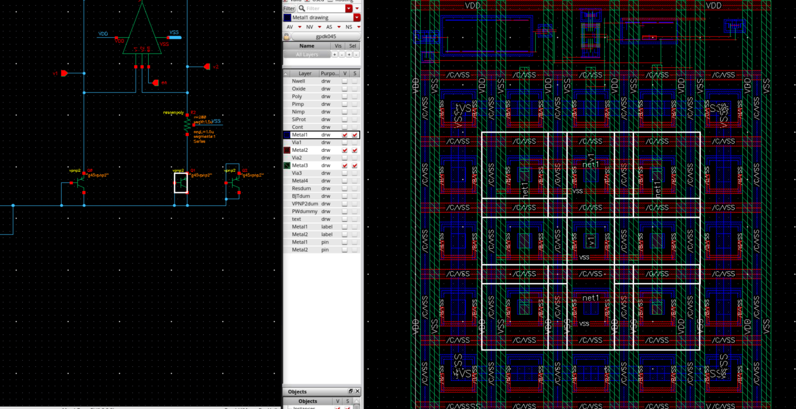
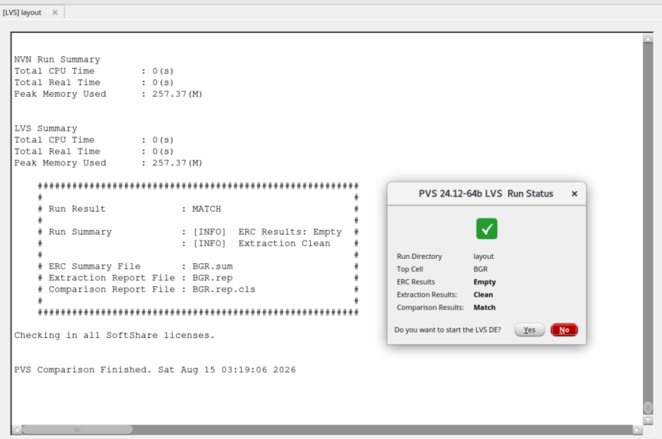

Analog IC Design & Full-Custom Layout
Ten analog CMOS building blocks from circuit architecture and schematic design through DRC/LVS/ERC-clean layout, including a characterised LDO and a matching-driven bandgap reference
Cadence Virtuoso · Spectre · PVS · GPDK45
Role in the project
Sole author. Circuit architecture, transistor-level schematic design, device sizing and biasing, pre-layout simulation, full-custom layout, and physical verification for every block in the repository. Each block is documented with a project README, a design report, and a layout and physical verification report.
Objective
Build a documented reference set of the analog CMOS blocks that recur in real mixed-signal chips, using one consistent methodology end to end, so that both the circuit reasoning and the physical implementation decisions are traceable for each block.
Design flow
Analog design portfolio
| Block | Purpose and design focus | Status |
|---|---|---|
| Bandgap reference | Precision voltage reference using PTAT and CTAT compensation; matching and temperature behaviour dominate the design. | Schematic, layout, DRC/LVS/ERC |
| Low-dropout regulator | PMOS pass device with closed-loop feedback; loop stability, phase margin, and PSRR are the governing constraints. | Schematic, layout, characterised |
| Single-stage OTA | Transconductance amplifier for analog signal processing; operating-point selection and gain–bandwidth trade-off. | Schematic, layout, DRC/LVS/ERC |
| Two-stage operational amplifier | Multi-stage CMOS op-amp with Miller compensation; phase margin and loop stability. | Schematic, layout, DRC/LVS/ERC |
| Comparator | Differential voltage comparator for analog-to-digital interfaces; offset and matching awareness. | Schematic, layout, DRC/LVS/ERC |
| Current mirrors | Basic and cascode topologies for current replication and bias generation; accuracy versus headroom. | Schematic, layout, DRC/LVS/ERC |
| Differential pair | CMOS differential amplifier; gain and common-mode behaviour, matching-critical placement. | Schematic, layout, DRC/LVS/ERC |
| Level shifter | Voltage-domain translation for multi-supply systems. | Schematic, layout, DRC/LVS/ERC |
| Schmitt trigger | Comparator with hysteresis for noise immunity. | Schematic, layout, DRC/LVS/ERC |
| Bias circuits | Current and voltage bias generation feeding the other blocks. | Schematic, layout, DRC/LVS/ERC |
Analog design considerations
- Operating-point selection and transistor-region awareness — keeping devices in saturation across the intended input range rather than only at the nominal bias point.
- Current-mirror accuracy: channel-length modulation and VDS mismatch between reference and mirror branches, and the headroom cost of cascoding.
- Differential-pair matching and its dependence on layout symmetry, not just schematic symmetry.
- Gain and bandwidth trade-offs against bias current and device sizing.
- Miller compensation, phase margin, and loop stability for the feedback blocks.
- PSRR behaviour for the regulator and reference blocks.
- PVT and mismatch awareness in interpreting simulation results.
- Layout-dependent parasitics and how they shift pre-layout predictions.
Layout methodology
Analog layout is not drawing the schematic in geometry — it is deciding which physical effects the circuit can tolerate and which it cannot. These are the considerations I worked through on each block.
Matching and placement
- Common-centroid placement for matched pairs and reference arrays, so a linear process or thermal gradient across the die contributes equally to both halves and cancels to first order.
- Interdigitation for differential pairs and mirror devices, splitting each device into fingers and alternating them so the two devices share the same average environment.
- Dummy devices at array edges. An edge device etches differently from an interior one, so without dummies the outermost real device is systematically mismatched.
- Identical orientation for matched devices — same direction, same finger count, same contact arrangement. Mirroring a device is not the same as matching it.
- Diffusion sharing between series devices where it reduces junction area without breaking the matching arrangement.
Layout-dependent effects (LDE)
At modern nodes the surroundings of a device change its behaviour, so identical schematic devices can behave differently purely because of where they sit. The effects I designed around:
- Well proximity effect (WPE) — ions scattering off the well mask edge during implant shift the threshold voltage of devices near a well boundary. Matched devices were kept at the same distance from the well edge, and critical devices pulled away from it.
- STI stress / length-of-diffusion (LOD) — shallow-trench-isolation compressive stress changes mobility as a function of how much diffusion sits between the gate and the trench edge. Matched devices were given equal diffusion extension on both sides.
- Poly spacing effect (PSE / OSE) — the pitch to neighbouring poly affects the printed gate length, so matched devices were given identical poly neighbourhoods rather than left with different spacing on each side.
- Why it matters here — in a current mirror or a differential pair the whole design assumes two devices are the same. Any LDE asymmetry appears directly as mirror-ratio error or input offset, and schematic simulation will not show it unless the extraction accounts for it.
Isolation and latch-up prevention
- Substrate and well taps placed close to every device group, tying the substrate and wells down locally so injected current cannot raise the local potential enough to forward-bias a junction.
- Guard rings around sensitive analog devices — p+ rings to collect substrate minority carriers, n+ rings in the well — which both reduce coupled noise and break the parasitic PNPN path that causes latch-up.
- Deep N-well isolation for blocks that must be kept off the common substrate, giving the device group its own isolated pocket.
- Spacing between injectors and sensitive devices, since latch-up risk and substrate coupling both fall off with distance from the switching source.
- Substrate-noise isolation generally: keeping switching digital-style nodes and quiet analog nodes physically separated rather than relying on the supply to reject the difference.
Power planning, EM and IR drop
- Supply routing width set by current, not by convenience — a wire has a maximum current density before electromigration becomes a reliability concern, so branches carrying real current were widened and given adequate via arrays rather than single vias.
- Via arrays at supply transitions, because a single via is usually the electromigration bottleneck in an otherwise wide path.
- IR drop awareness — resistance in the supply path drops voltage before it reaches the device, which eats headroom that biasing calculations assumed was available. Long thin supply routes to a bias branch quietly change its operating point.
- Separate quiet and noisy supply routing where the block allowed it, so switching return current does not share a path with a reference branch.
- Star-style distribution for bias and reference nets, so each branch sees the supply directly instead of through another branch's IR drop.
Routing, parasitics and manufacturability
- Parasitic-aware routing — high-impedance and high-gain nodes routed short and narrow to limit added capacitance, while low-impedance and current-carrying nets are routed wide.
- Matching-critical routing — matched devices routed with matched interconnect, so the two paths carry the same resistance and capacitance. Careful placement followed by careless routing reintroduces the mismatch that placement removed.
- Shielding on sensitive nets where routing density allowed it, with a quiet net or ground line placed between an aggressor and a victim.
- Crosstalk avoidance — avoiding long parallel runs between a switching net and a sensitive node on the same or adjacent layers.
- Antenna rule awareness — large metal area connected to a gate before the upper layers exist can accumulate charge during processing, so long routes to gates were broken up or jumped to a higher layer.
- Metal density — each layer must fall within a density window for chemical-mechanical polishing to planarise evenly. Sparse analog regions need fill, but fill placed next to a sensitive net adds capacitance, so fill exclusion around critical nets was considered rather than filling blindly.
- DFM awareness generally — drawing to comfortable margins where the block does not need to be minimum-area, since a layout that only just passes DRC is fragile.


How layout choices reach the circuit
| Layout decision | Physical consequence | Circuit-level effect |
|---|---|---|
| Placement asymmetry or LDE mismatch | Threshold and mobility differ between nominally identical devices | Input offset, mirror-ratio error, reference inaccuracy |
| Routing capacitance on a high-impedance node | Extra capacitance at a gain node | Pole shifts down, bandwidth and phase margin fall |
| Narrow supply or output routing | Series resistance and IR drop | Lost headroom, regulation error, changed bias point |
| Missing or distant substrate taps | Local substrate potential can shift | Substrate coupling, latch-up risk |
| Long parallel routing beside a switching net | Coupling capacitance | Crosstalk onto a sensitive node |
| Blind metal fill near a critical net | Added parasitic capacitance | Bandwidth and settling degrade after extraction |
| Single via on a high-current path | Current-density hotspot | Electromigration reliability concern |
This is why pre-layout and post-layout results differ, and why PEX is the point at which a layout is actually judged rather than the point at which it is finished.
Featured sub-project — Low-Dropout Regulator
The most fully characterised block in this set: a 1.8 V to 1.2 V CMOS LDO built around an error amplifier driving a PMOS pass device inside a resistive feedback loop.
Load current approximately 1 mA. Line regulation, load regulation, output noise, and load-step transient response are not claimed — those results are not part of the documented result set.
Analog design focus
- Pass-device behaviour — the PMOS is sized for the dropout target at the intended load current, and that same size sets the dominant pole at the output, so sizing and stability are one decision.
- Error amplifier — sets loop gain and therefore regulation accuracy, while its output impedance interacts with the pass-device gate capacitance.
- Feedback network — the resistive divider fixes the output against the reference and contributes to loop dynamics.
- Biasing — bias current sets amplifier transconductance, and therefore both loop gain and quiescent current.
- Dropout behaviour — how far the input can fall before the pass device leaves its regulating region.
- Loop stability and compensation — the 90.46° phase margin reflects a deliberately conservative, well-damped loop.
- PSRR — supply-ripple rejection across frequency, and how it degrades as loop gain rolls off.
- Layout parasitics — resistance in the pass-device and output routing appears directly as regulation error, so those paths were widened and given via arrays.
Verification
DC, transient, PSRR, and loop-stability analysis; layout closed to DRC, LVS, and ERC, with matched symmetric placement for the error-amplifier input pair and guard rings around the sensitive analog devices.




Featured sub-project — Bandgap Reference
A PTAT/CTAT compensated voltage reference whose accuracy is set almost entirely by how well its devices match, which makes it the most layout-driven block in the set.
Circuit design
- Reference generation — a PTAT term from the base-emitter voltage difference between unequally sized BJT branches is summed with the CTAT base-emitter voltage itself, so the opposing temperature slopes partially cancel.
- Biasing — branch currents set so both BJT branches sit at the intended current-density ratio, since that ratio is what produces the PTAT term.
- Temperature compensation — the weighting between PTAT and CTAT contributions determines where the curvature minimum sits.
- Simulation — DC operating-point and temperature-sweep analysis to confirm the compensation behaves as intended.
Layout design
- 5 × 5 common-centroid BJT array — the unequal-area devices distributed symmetrically about a shared centroid so linear process and thermal gradients cancel to first order.
- Resistor matching — identical unit resistors in the same orientation, since the reference depends on a resistor ratio rather than an absolute value.
- Symmetric routing so both branches see matched interconnect parasitics.
- Dummy devices at array edges to equalise the local etch and stress environment.
- Guard rings around the array for substrate-noise isolation and latch-up prevention.
- Parasitic-aware routing on the high-impedance summing nodes.


Verification
Every block was closed to DRC, LVS, and ERC in Cadence PVS. Debug cycles covered spacing, enclosure, connectivity, and device-geometry violations, with matching and routing corrections fed back into the placement where verification exposed them.

What I learned
- Schematic symmetry is not matching. Two devices are only identical if the layout makes their surroundings identical — orientation, dummies, diffusion extension, poly neighbourhood, and distance from the well edge all count.
- A block that closes DRC but ignores matching intent is a failed analog layout. Clean verification is the minimum bar, not the goal; the goal is a layout whose parasitics the circuit can live with.
- Layout-dependent effects made me stop treating the schematic as the design. WPE, STI stress, and poly spacing change device behaviour without changing a single schematic parameter, which is why post-extraction results are the ones that count.
- Power planning is analog design. IR drop in a supply route removes headroom that the biasing calculation assumed, so where the supply is routed changes the operating point.
- Routing can undo placement. A careful common-centroid arrangement followed by asymmetric routing reintroduces exactly the mismatch the placement was built to cancel.
- Documenting design intent per block makes reviews far faster than reading the schematic cold, and forces me to justify choices I would otherwise make by habit.